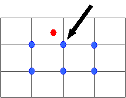

Extrapolated values
are values assigned outside a set of distributed values. In this
situation the
point- or elementset does not enclose the whole object
(e.g. formation) to which the distributed value is attached:
The extrapolation
method depends on whether the distributed values are created with a point-
or an elementset.
The ‘nearest neighbour’ method is used for extrapolation of values. To all points outside the defined set the value of the point nearest to it contained by the defined set will be assigned (see figure).

The blue spots contain the values. The red spot is not enclosed by the blue spots, so it uses its 'nearest neighbour' to obtain a value. The value of the blue spot pointed to by the black arrow will be used for the red spot.